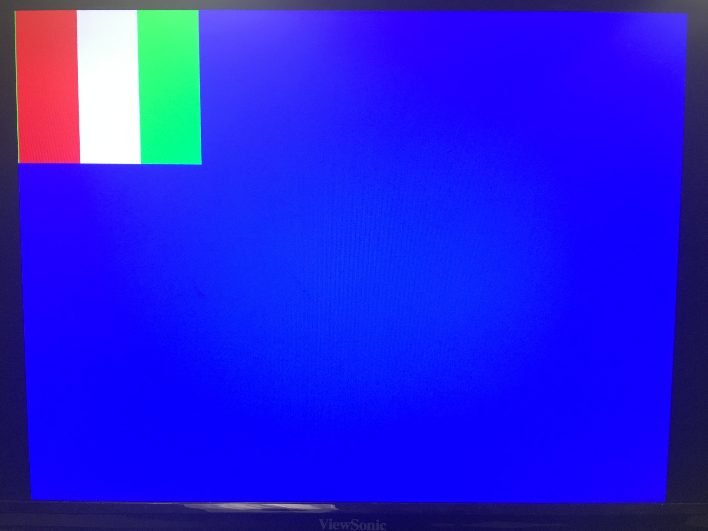

Team Tasks
For this lab, we split into two teams (Team Arduino and Team FPGA). One to develop an FPGA module capable of detecting basic shapes from our OV7670 camera input, and another to pass this information onto our Arduino.
- Arduino Team: Asena, Laasya
- FPGA Team: Cynthia, Robert, Nonso
Lab Description
This lab was the first step in adding a treasure detection system to our robot capable of recognizing basic shapes. In this lab we became familiar with the camera and working on FPGA, reading the camera and creating a basic image processor capable of detecting colors.
Arduino
The first step for the Arduino side of the lab was to determine and write to the correct registers in order to do the camera setup. In order to do so, we dug through the OV7670's camera documentation, and matched up each register description with the lab's specifications as detailed in the prelab.
We first needed to find the register that would enable reset of all previous register values. After this, we found registers that would enable the correct resolution format (QCIF) and our desired pixel pattern (RGB 565). We additionally adjusted scaling, enabled the use of an internal clock as external, mirror flipped the image, and changed the automatic gain scaling of the image using various registers on the camera.
In order to actually change the register contents, we used the OV7670_write_register(reg,val); function with the register hex id and desired value. We then iterated over the registers we edited and printed out the contents of those registers in our read_key_registers() function. Our main issue with this portion of the lab was that we could not actually write or read from these registers as the camera needed to be clocked externally from the FPGA; simply having the Arduino and camera connected did not suffice. Once we integrated all three components, this Arduino portion of the lab went smoothly. Finally, we implemented rudimentary color detection with LED feedback, which we'll describe further in the integration section.
FPGA
On the FPGA side, we first wrote an image into memory, then spit this image back out to the VGA display this required writing specific colors to memory at given times and hooking the output of the memory up to the VGA module. We created a flag.

The code to generate this flag was written in verilog as shown below.
always @ (WRITE_ADDRESS) begin
//write memory
if(VGA_PIXEL_X>(`SCREEN_WIDTH-1) || VGA_PIXEL_Y>(`SCREEN_HEIGHT-1))begin
W_EN = 1'b0;
pixel_data_RGB332 = 8'd0;
end
else begin
if ( VGA_PIXEL_X >= 0 && VGA_PIXEL_X <= 58) begin
pixel_data_RGB332 = RED;
end
else if ( VGA_PIXEL_X >= 59 && VGA_PIXEL_X <= 58*2) begin
pixel_data_RGB332 = 8'b11111111;
end
else begin
pixel_data_RGB332 = GREEN;
end
W_EN = 1'b1;
end
end
Once we verified the memory block was updating correctly, we next sought about interfacing with the camera. The camera sends 2 bytes off color data at a time, which our friends on the Arduino team told us was in an RGB565 configuration. We had to reduce this to an RGB 332 configuration which was compatible with our VGA driver and storable in a single byte. The final implementation we settled on was in the form of a finite state machine clocked by the incoming clock of the camera as shown below.
 The FSM waits in idle until a row transmission begins. Once there, it alternates between Byte 1 and Byte 2 until a row transmission finishes, when it transitions to line done. When the entire image has been received, vsync will go high, at which point the FSM resets. In Byte 1, the down sampler reads the first byte of camera data from GPIO and stores it in a register file. In Byte 2, the down sampler reads the second byte from GPIO and concatenates bits from this new data and the data in the register file to create an 8-bit RGB332 value which is sent to memory.
The FSM waits in idle until a row transmission begins. Once there, it alternates between Byte 1 and Byte 2 until a row transmission finishes, when it transitions to line done. When the entire image has been received, vsync will go high, at which point the FSM resets. In Byte 1, the down sampler reads the first byte of camera data from GPIO and stores it in a register file. In Byte 2, the down sampler reads the second byte from GPIO and concatenates bits from this new data and the data in the register file to create an 8-bit RGB332 value which is sent to memory.
Integration
With the two halves done, all that was left was putting them together (and a considerable amount of debugging). We hooked the 8 data pins, HREF, PCLK, and VSYNC up to the FPGA as GPIO inputs and a single 24 MHz clock signal as an output to the camera to drive it. We ran the register setup script that we created in the Arduino portion of the lab to initialize the correct register content. We additionally enabled the two registers required for the camera to output a "color bar" test image (as opposed to a live feed). With this test image setup, we observed correct operation, the camera updating a monitor with the color bar test image over VGA.
From here, we needed only disable a few registers to get live video feed from the camera. To detect colors, we wrote a rudimentary verilog program to increment counters based on values of red or blue in excess of a threshold. This program sent 2 bits of output over GPIO to the Arduino. The Arduino recieved the "valid" and "color" bits sent over, and lit up red and blue LEDs according to this simple program:
int ackPin = 9;
int colorPin =10;
int redLED = 11;
int blueLED = 12;
void setup() {
// put your setup code here, to run once:
Serial.begin(9600);
Serial.print("start");
pinMode(ackPin, INPUT);
pinMode(colorPin, INPUT);
pinMode(redLED, OUTPUT);
pinMode(blueLED, OUTPUT);
}
void loop() {
if (digitalRead(ackPin)){
if (digitalRead(colorPin)) digitalWrite(blueLED, HIGH);
else digitalWrite(redLED, HIGH);
delay(100);
digitalWrite(redLED, LOW);
digitalWrite(blueLED, LOW);
}
}
Here is a video of our color detection in action:
The color displayed on the VGA monitor output is very clear, and improved once we powered the FPGA off of the Arduino and synced it with a common ground. This dissipated some of the noise in the heavy wiring required for this project.